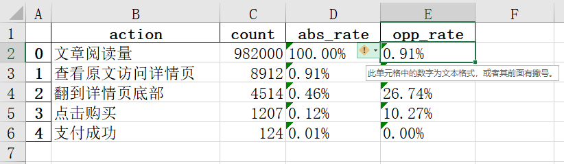
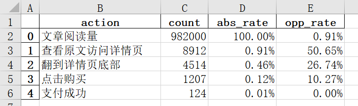
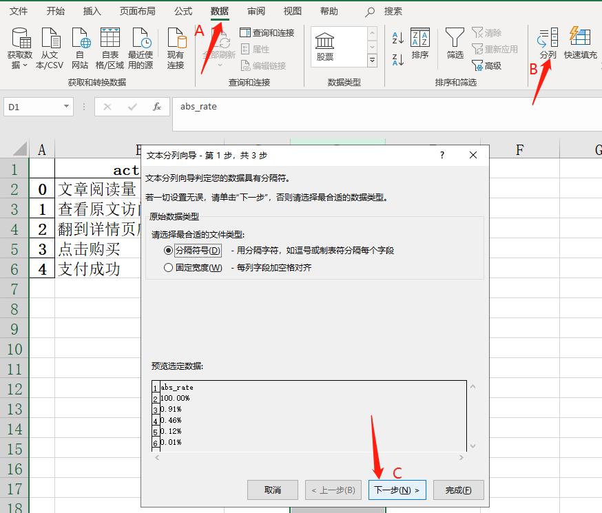

python、pandas、to_excel、文本形式存储的数据
我用 python pandas 写了数据统计与分析脚本，并把计算结果用 pandas 的 to_excel() 存入到 excel 表格提交给团队。但遇到一个问题：当我的老板和同事们打开 excel 文件时，发现百分比数值无法正常显示，提示为“文本形式存储的数据”。

想让此类百分比数值正常显示，我该怎么办呢？

1、必须从自己身上找解决方案。在工作中，当我们需要输出文档给团队查阅，必须自己为文档的质量负责，而非要求或期望我的老板和同事来处理。
2、立即生效、简单好用的笨办法。
手动打开excel文件，选中“文本形式存储的数据”的一列数据，点击“数据 - 分列” 在弹出的菜单中点击两次“下一次”，然后点击“完成”即可。每次操作只能选中一列数据，如果有多列数据，就要分别操作多次。没办法偷懒。

该方法看上去有点粗笨，但在紧急情况下，你能立即用，马上解决问题。
如果单个文件中此类“文本形式存储的数据”较多，或你需要频繁输出该类文件，那么当然更好的做法是：直接优化脚本，从根源上解决问题。
为了完成这篇学习笔记，我把此类情况的最小情境构建一些数据，写个小脚本，如下：
import pandas as pd
#构建一组数据
df = pd.DataFrame([['文章阅读量', 982000],
['查看原文访问详情页', 8912],
[ '翻到详情页底部', 4514],
[ '点击购买', 1207],
['支付成功', 124]],
columns=['action','count'])
# 根据数据计算绝对转化率、相对转化率
df['abs_rate'] = df['count']/df['count'].values[0]
df['opp_rate'] = (df['count'].shift(axis=0,periods=-1))/df['count']
df = df.fillna(0)
# 设置百分比数据的显示
df['abs_rate'] = df['abs_rate'].apply(lambda x:format(x, '.2%'))
df['opp_rate'] = df['opp_rate'].apply(lambda x:format(x, '.2%'))
df.to_excel('result.xlsx', index=False)
如果只有一个表格，那么可不再使用 to_excel() 而是改用 to_csv()。具体代码为：
df.to_csv('result.csv',encoding='utf_8_sig',sep=',',index=False)
里面的两个关键参数，解释一下：
encoding='utf_8_sig' 而不是默认的 utf-8 是为了解决中文乱码问题；index=False 则是不写入 dataframe 数据类型的 index 那列无意义数据。但实际情况是，数据统计分析的输出，通常有多个子表构成，所以还是得用回 to_excel() 吖！
我搜了非常多网页，尚未找到直接解决问题的方法。在这种情况下，我只能从以下2个结果中二选一：
想要显示为小数，则直接注释掉脚本中的 2 句百分数格式设置语句即可。
#df['abs_rate'] = df['abs_rate'].apply(lambda x:format(x, '.2%'))
#df['opp_rate'] = df['opp_rate'].apply(lambda x:format(x, '.2%'))
真是不甘心吖！！希望有天能找到答案，更新本文！笔记先落笔至此吧！
btw，您有解决办法吗？当需要把dataframe数据输出到excel并有多个子表时，如何能让百分数正常显示，而无任何异常提示呢？